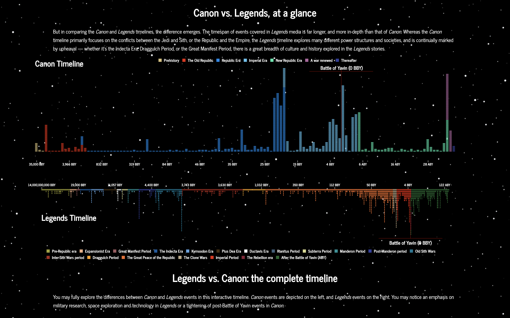

la chronologie
La chronologie Star Wars ne se résume pas simplement aux films I, II, III, IV, V, VI (les films VII, VIII, IX n'éxistant pas)
il existe alors des périodes antérieurs et extérieurs à ce qu'on appel la 'chronologie principale'. De l'Ancienne République au Nouvel Ordre Jedi,
c'est plus de 2500 ans d'histoire qui s'ouvre à nous... Avec sa part de zones d'ombres éffacées de l'histoire qui ne seront jamais révélées...
Des personnages comme Dark Bane, le Grand Amiral Thrawn, Mara Jade, Revan, Quinlan Vos qui ont vécu à des époques différentes et qui ont changé la face de la galaxie
à jamais dans des évènements majeur, tout est retranscrit ici (bon pt'être pas tout m'enfin j'me comprends).

Épisode 1:Avant de devenir un célèbre chevalier Jedi, et bien avant de se révéler l'âme la plus noire de la galaxie,
Anakin Skywalker est un jeune esclave sur la planète Tatooine. La Force est déjà puissante en lui et il est un remarquable pilote de Podracer.
Le maître Jedi Qui-Gon Jinn le découvre et entrevoit alors son immense potentiel. Pendant ce temps, l'armée de droïdes de l'insatiable Fédération
du Commerce a envahi Naboo dans le cadre d'un plan secret des Sith visant à accroître leur pouvoir.
Épisode 2:Depuis le blocus de la planète Naboo, la République, gouvernée par le Chancelier Palpatine, connaît une crise. Un groupe de dissidents,
mené par le sombre Jedi comte Dooku, manifeste son mécontentement. Le Sénat et la population intergalactique se montrent pour leur part inquiets.
Certains sénateurs demandent à ce que la République soit dotée d'une armée pour empêcher que la situation ne se détériore.
Padmé Amidala, devenue sénatrice, est menacée par les séparatistes et échappe à un attentat.
Épisode 3:La Guerre des Clones fait rage. Une franche hostilité oppose désormais le Chancelier Palpatine au Conseil Jedi. Anakin Skywalker,
jeune Chevalier Jedi pris entre deux feux, hésite sur la conduite à tenir. Séduit par la promesse d'un pouvoir sans précédent, tenté par le côté obscur de la Force,
il prête allégeance au maléfique Darth Sidious et devient Dark Vador.Les Seigneurs Sith s'unissent alors pour préparer leur revanche, qui commence par l'extermination des Jedi.
Épisode 4:Alors que l'Alliance rebelle tente de détruire l'Étoile noire, arme suprême du despotique Empire galactique, Luke Skywalker, jeune ouvrier agricole,
intercepte un appel à l'aide de la princesse Leia. Il se lance ainsi dans une mission courageuse afin de la délivrer de Darth Vador et de l'Empire.
Épisode 5:Malgré la destruction de l'Étoile noire, l'Empire maintient son emprise sur la galaxie, et poursuit sans relâche sa lutte contre l'Alliance rebelle.
Basés sur la planète glacée de Hoth, les rebelles essuient un assaut des troupes impériales. Parvenus à s'échapper, la princesse Leia, Han Solo, Chewbacca et C-3P0 se dirigent vers Bespin,
la cité des nuages gouvernée par Lando Calrissian, ancien compagnon de Han.
Épisode 6:L'empire galactique est plus puissant que jamais : la construction de la nouvelle arme, l'étoile de la mort, menace l'univers tout entier...
Han Solo est remis à l'ignoble contrebandier Jabba le Hutt par le chasseur de primes Boba Fett. après l'échec d'une première tentative d'évasion menée par la princesse Leia,
également arrêtée par Jabba, Luke Skywalker et Lando parviennent à libérer leurs amis. Il est alors l'heure d'aller sauver la galaxie.